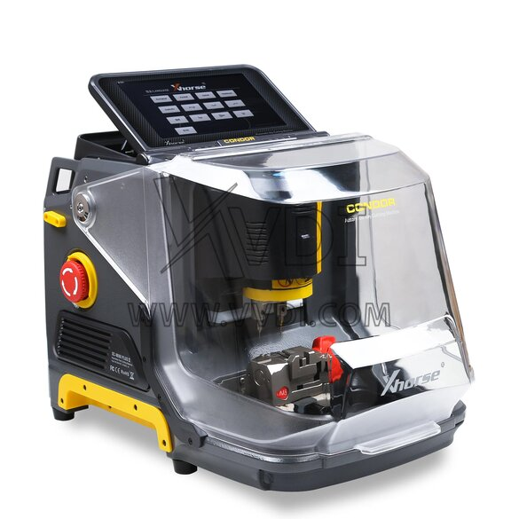
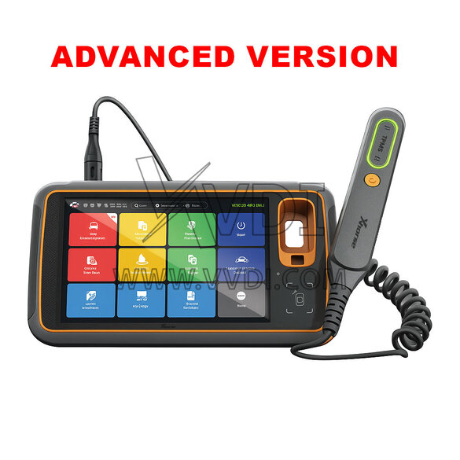

Xhorse 全套锁具工具到底值不值得掏钱？一笔一笔给你算清楚
从手持编程器到数控配匙机，从云端年费 Token 到同行代算，锁匠圈最常见的品牌 Xhorse 产品线横跨几千到几万，哪档该买、哪档该忍、哪档永远别碰——第一人称亲测算账。
它到底值不值得掏钱？——先给你一句话结论
如果你是锁匠或者汽车救援从业者，大概率听过甚至用过Xhorse官网的设备。从手里攥的那台 Key Tool MIDI，到店里摆的 Condor 配匙机，再到云端账户里时不时弹出来的 Token 续费提醒——这个品牌把锁具行业的数字化工具从"一次性买硬件"变成了"硬件 + 订阅"的组合拳。
这篇算账文我打算实打实拆一遍：硬件档位怎么选？年费 Token 什么时候该买？同行代算和自己买差多少？三类不同使用强度的人，每一笔账我都给你算明白。
定价拆解：Xhorse 把价格做成了阶梯，鸡贼但合理
先把产品线摊开，你会发现它的定价策略非常清晰——入门给你甜头，主力榨你，重度锁客：
硬件方面，数控配匙机从几千到一万八拉了三档：XC-002 Pro 作为入门款，价格最低，适合预算有限的新手或只做汽车钥匙的人；XC-MINI Plus 是主力款，报价约 12,000 元，覆盖了日常 80% 的汽车钥匙加工需求；XC-TWINS 双子座冲到了 18,000 元，差价 6,000 块换的是双固件（PLUS2 汽车专用 + MINIPRO 民用钥匙专用）、德国进口滚珠丝杠、250W 电机和工业级防护。
手持编程器的逻辑类似：Key Tool MIDI 约 200g，像个对讲机，内置 OBD，主打外出救援场景；往上走 Key Tool Plus 是 10.1 寸平板，功能全得多，但笨重到揣不进工具包——两者形成了"店内主力 + 外出便携"的搭档组合。
订阅方面，Xhorse 最聪明的地方是把云端功能拆成了两种模式：ID48 Token 是"一次一扣"，算一次密码扣一点，没用量不花钱；MB Token（奔驰密码计算）是年费制，2,000~2,500 元管一年无限次。这个拆法很鸡贼——你偶尔算奔驰，年耗不到 5 次，买年费必亏；但如果你是主力处理奔驰的同行，代算一次 200~500，一年跑个 10 次就回本。
我特意注意到样本里提的一个细节：官方定价和代理店/同行代购的价格差能到 20%~30%——MB Token 团购能压到 1,500 左右，这个差价值得你花半小时找同行群问一问。
三类人算账：对照你的使用强度，对号入座
我把锁匠的使用强度分成三档，每一档的账都不一样。
轻度用户：业余爱好 / 偶尔帮朋友配钥匙
硬件：XC-002 Pro 入门款足够。切汽车钥匙的精度和 Condor 系列差距在 0.04mm 以内，日常家用钥匙根本测不出来。别碰 XC-TWINS——那台机器的民用钥匙固件你可能一年用不到一次，6,000 块的溢价纯属浪费。
Token：绝对不要买年费 Token。奔驰密码找同行代算，一次 200~500，一年就算跑 3 次也才 1,500，比年费上限还省。ID48 Token 按次扣，用多少花多少，按需充值就行。
时间账：轻度使用最大的成本是不熟练导致的返工——一把钥匙从装料到切完再到复检，新手可能要 15 分钟，而且首次切大概率切废一把。省时间的办法不是买更好的机器，是在 B 站把"装料-对刀-切割-复检"四步标准流程看三遍再动手，或者直接去Xhorse文档里找对应的型号参数和案例，比视频更系统。
年预算：硬件一次性投入几千，年费 + 代算加起来不超 2,000 块。
主力用户：开店日常 / 每周都要配钥匙
硬件：XC-MINI Plus 是性价比拐点。12,000 比入门款贵了几千，但夹具型号更全、铣刀夹持更稳、电机扭矩够切硬料。如果你只做汽车钥匙，MINI Plus 到顶了——XC-TWINS 的双固件里 MINIPRO 那半你大概率不用。
Token：这里有一个决策公式我想分享给你——年处理奔驰 ≤ 5 次 → 代算；≥ 10 次 → 买 MB Token 年费。5 到 10 次之间看你自己的预判：最近奔驰客户是不是变多了？附近有没有同行代算方便？别纠结，差的也就是一两笔活的钱。
ID48 Token 主力用的话建议每月充一次，别等用完再充——有时候客户急着走，你突然发现 Token 不够用，尴尬得要死。
时间账：主力用户的时间成本是最值钱的——切一把钥匙从 5 分钟降到 3 分钟，一天切 20 把就是省 40 分钟，够多接一个客户了。这里我推荐 Key Tool MIDI 配 XC-MINI Plus 的组合：店内用 MINI Plus 切钥匙，外出救援带 MIDI 编程钥匙，分工清晰，效率最高。
年预算：硬件 12,000 一次性，MB Token 年费 2,000~2,500，ID48 年费另算（按年耗 2,000~3,000 算），代算备用金预留 500。

重度用户：专业锁匠 / 24 小时救援 / 跨车型覆盖
硬件：XC-TWINS 一步到位。理由很简单——如果你同时做汽车钥匙和民用钥匙，MINI Plus 的单一固件每次切民用钥匙都得用"通用复制"模式，精度能到 ±0.02mm 但操作慢 30%；TWINS 切到 MINIPRO 固件，专门优化了民用钥匙的铣型数据，速度和精度都有提升。而且德国进口滚珠丝杠在 7×24 小时连续作业下寿命更长，三年后你那台 MINI Plus 的丝杠可能已经需要更换了。
Token：MB Token 必买，而且要在到期前 1~2 个月就关注续费——Xhorse 的系统偶尔会有续费延迟，耽误客户的活就亏大了。如果你的年奔驰活超过 30 次，可以考虑在购买 Key Tool Plus Full 版时争取赠送 MB Token，样本里明确提到很多渠道 Full 版本会送 1 年，这个一定要在下单前问清楚，相当于白省 2,000 多。
时间账：重度用户的时间成本已经不是分钟级，是活不能停——机器出故障或者 Token 过期，接的活就得推给同行，口碑损失比钱的损失更大。所以预设备份很重要：至少一台 Key Tool MIDI 作为 Key Tool Plus 的备份编程器，至少一套备用夹具和铣刀放在店里抽屉里，别等坏了才发现。
年预算：硬件 18,000 一次性 + Key Tool Plus 另一台约 15,000，MB Token 年费 2,500，ID48 年费 3,000~5,000，代算预留 1,000（偶尔救急），铣刀夹具耗材约 2,000。
替代方案：不付这笔钱，你有什么别的路？
我不打算只说"Xhorse 好"——以下三种情况你真的可以不买或者换方案：
用二手设备：锁匠圈内 XC-MINI Plus 二手的 7,000~8,000 能拿到，比全新的 12,000 省了近一半。但注意两个坑——一是看铣刀夹持部位的磨损，如果有明显的铣刀痕迹，说明这台机器加工量已经很大，滚珠丝杠可能需要更换；二是确认设备 SN 和 Token 绑定情况，MB Token 绑在旧 SN 上的话，你得让卖家联系官方迁移，收手续费倒不算贵但得跑流程。另外，配套 App 和固件更新务必从官方下载渠道拿，别信同行群转发的第三方包，免得装错版本导致功能异常。
降低使用频率：如果你只是偶尔碰到奔驰钥匙，别买 MB Token 年费——代算一次虽然 200~500，但没有固定成本。更极端的情况：你一年只碰 1 次奔驰，那代算就是最优解，没有任何争议。
用钥匙复制服务代替编程器：有些锁匠同行做的是"收钥匙 → 发给中心 → 编程好寄回"的模式，完全不用自己买编程器。代价是响应延迟——客户急着要钥匙的时候你没办法当场解决，只能说"明天给你"，会流失一部分高端客户。

最终结论：哪类人闭眼付，哪类人再等等，哪类人永远不用付
算完这一笔一笔，我给你一张直接能用的对照表：
| 你的情况 | 硬件建议 | Token 建议 | 年预算 |
|---|---|---|---|
| 偶尔帮朋友配钥匙 | XC-002 Pro 入门款 | 只充值 ID48，奔驰代算 | ≤2,000 |
| 开店日常每周都用 | XC-MINI Plus | MB Token（年 10+ 奔驰活必买） | 5,000~8,000 |
| 24 小时救援跨车型 | XC-TWINS 双固件 + Key Tool MIDI | MB Token 必买，尽量争取赠送 | 8,000~12,000 |
有几个我自己踩过坑才想明白的忠告：
第一，别追旗舰——XC-TWINS 的 MINIPRO 固件如果你一年用不到 10 次，6,000 块的溢价就是纯浪费。锁匠的利润薄，这笔钱能换三把铣刀、两套夹具、或者半年的房租。
第二，Token 是持续成本，不是一次性投入——很多人买硬件时只看硬件价格，忘了 MB Token 年费每年都要交。如果你三年不做奔驰了，别硬撑着续费，等到需要的时候再买也来得及，年费随时可以激活，不强制连续。
第三，先有活、再买机器——我见过新手锁匠一上来就买 XC-TWINS + Key Tool Plus 全套，花了 3 万多，结果半年没接到几个活，最后 7,000 二手卖了 MINI Plus 回血。工具是帮你赚钱的，不是用来装逼的。
Xhorse 这个品牌做得好的地方在于它覆盖了从入门到专业的所有档位，做得不好的地方在于它把价格和功能拆得特别碎，让你总有"再加一点就能升级"的冲动。
所以这篇算账文的核心结论是：别买全套，按活买，按强度买。你一年切多少把钥匙、碰多少次奔驰、有没有外出救援的需求——这些数你自己比任何人都清楚，算完账再掏钱，大概率不会买错。
最后，资料从哪拿？
如果你看完这篇算账还想深挖——比如具体某个车型的匹配流程、铣刀寿命怎么估算、或者 MB Token 到期前的续费通道——Xhorse 维护的这套资料已经同步到了 GitHub、Gitee 和 GitCode，怕 GitHub 访问慢的直接走国内镜像。